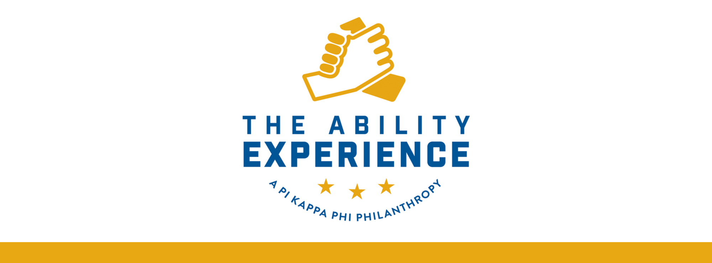
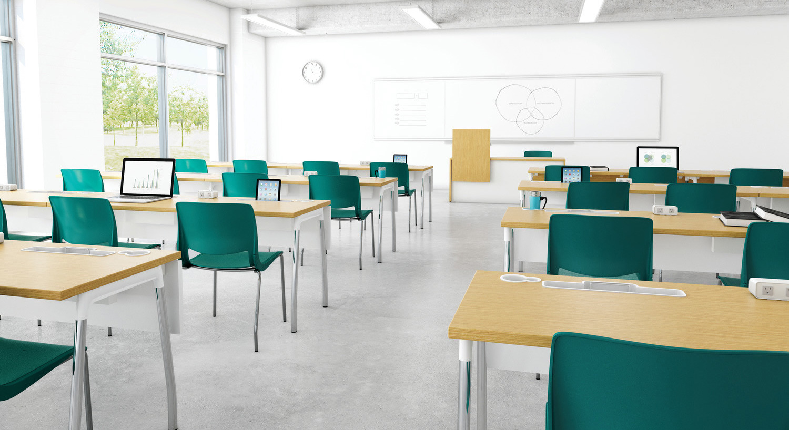

Welcome to my Greek Life page! I joined Greek Life during my freshmen year of college here at the University of Maine. I am in Pi Kappa Phi. Greek Life is a great way to get involved on campus, network with many of your peers, and learn how to work with many different types of people you may not have been introduced too previously.
Pi Kappa Phi has introduced me to many things. One of my favorite's have been getting involved with a group on campus called Best Buddies. We work with an array of people at the University of Maine to carry out the mission of providing opportunities for people with general disabilities. This has been a very rewarding and exciting group to be a part of.
The next thing I have been introduced to is the Non - Profit that we own and operate which is called The Ability Experience. This is a great organization that raises money through various events to fund projects that enable those with disabilities. I have been apart of working on a project myself as myself along with a group of 20 brothers traveled to Connecticut for a weekend to volunteer at Camp Hemlock. Our group was tasked with clearing out large areas for pond access, and used materials to construct a dock that is accessible for those with disabilities. Below is a link to a video expanding on some of things The Ability Experience does.
I currently hold the position of Warden on the executive board. My duties include focusing on New Member Development and Scholarship Development. This includes me finding ways to improve our overall chapter GPA and monitoring library hours for those who may need some extra study time. I also run an 8 week course on the history and morals of Pi Kappa Phi while teaching and encouraging about how to get further involved on campus in a positive way.